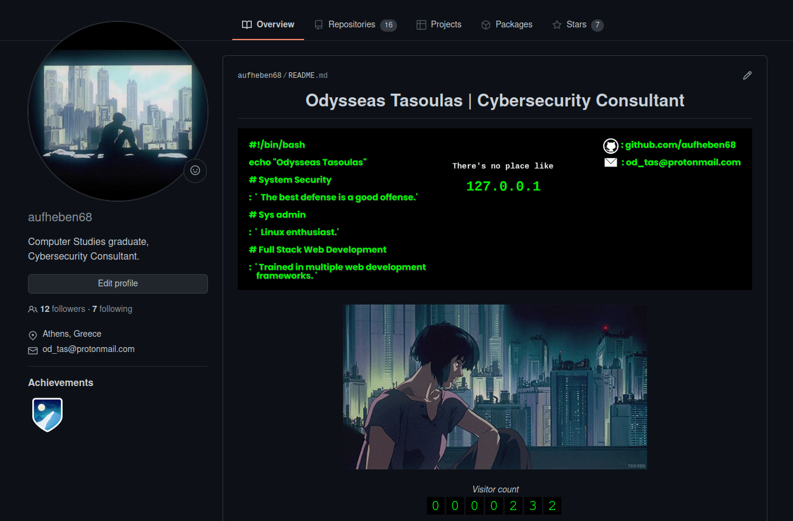

Hi,
I'm Odysseas Tasoulas,
Cyber
Security Consultant
🚀 Welcome to my website!
“Where the real world changes into simple images, the simple images become real beings and effective motivations of hypnotic behavior.”
📜 Manifesto
Hello world, I'm Ody 👋
I am a Computer Studies graduate (GPA: 7.5/10.0). I am currently working as a Cybersecurity Consultant on the ENIRISST+ project. I am part of the CryptoSec Lab on the University of Peloponesse. Furthermore, I am a researcher and I am working on a scientific publication that proposes a Trust Management System for IoT networks. On July of 2021, I completed my thesis on Collaborative Intrusion Detection Networks, which is a project that consists of a network implemented in Docker, an Ubuntu Linux VM that uses Infection Monkey built for penetration testing and a blacklist mechanism which is periodically excluding malicious IDS nodes. You can check the complete work here.
Last but not least, I'm a Java Certified Full Stack Developer of the AFDEmp Code Bootcamp at PeopleCert.
I am passionate about: Collaborative Intrusion Detection Systems | Trust Management Systems | Penetration Testing | Internet of Things Security | Blockchains
👩🏽🚀 Projects
You can check a variety of projects i have completed over the years by visiting my github page aufheben68.
A short preview of my README.me file:
“The splinter in your eye is the best magnifying-glass.”
🌮 Work History
ENIRISTT+ | CyberSecurity Consultant
August 2021 – Present | Athens, GR
I am currently working as a Cybersecurity Consultant on the project of the Intelligent Research Infrastructure for Shipping, Supply chain, Transport and Logistics.
PRIVATE COURSES | Computer Studies Assignments' processing
July 2017 – May 2021 | Athens, GR
I have been offering Computer Studies Private Courses and Assignments’ Processing
to undergraduate students in the following fields: C Programming, Object Oriented
Programming, Databases, Software Technology, Mathematics (Algorithmic
Complexity, Algebra, Discrete Mathematics), Version Control Systems (GitHub,
Gitlab).
You can download a copy of my CV from here
Connect with me on Linkedin
Send me an email